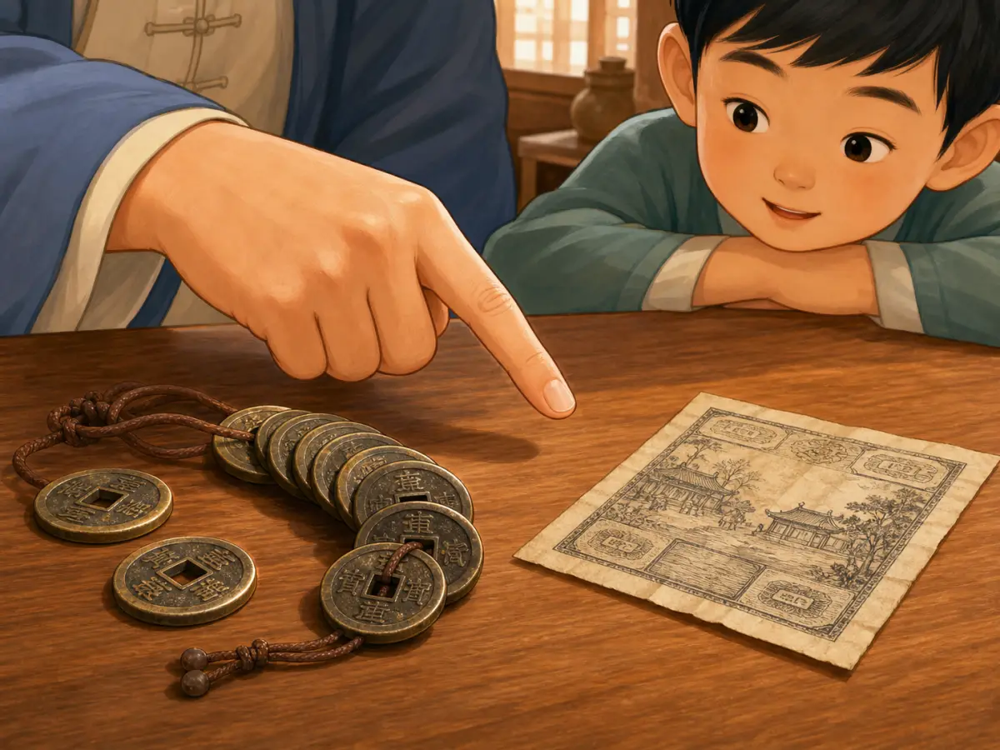

一只钱袋里，为什么装着四种钱？
Why Were There Four Kinds of Money in One Bag?
阅读难度 · 困难Reading level · Hard
Page 1
钱不一定只有一种样子
Money Did Not Have Just One Shape

Modern imagined scene: Whether shells could buy grain depended on the time, place, and agreement between traders. This is not a recorded historical event.
想象一只从古代集市带回来的钱袋。里面没有整齐的一叠钞票，而是几枚贝壳、一串金属钱；袋子旁边还放着一匹布和一小袋粮食。哪一种才是钱？答案可能是：它们都有机会被当作钱，但不一定在同一个地方、同一件事里使用。
钱不是只由某种材料决定的。一个东西要能帮助交换，人们得认得它，愿意收下它，还得大致相信以后别人也会接受它。中国古代地域辽阔，市场、税收、赏赐和远距离贸易的需要又不一样，所以贝、布帛、粮食、黄金和金属铸币曾以不同方式并存。历史不是“贝壳退休，刀币上班，铜钱再接班”的整齐队伍。
Imagine opening a money bag from an ancient market. Instead of a neat stack of bills, you find cowrie shells and a string of metal coins. Beside the bag sit a bolt of cloth and a sack of grain. Which one is money? The surprising answer is that all of them might serve as money - but not necessarily in the same place or for the same kind of payment.
Money is not defined by one material. People must recognize it, agree to accept it, and have some reason to think that others will accept it later. Ancient China covered an enormous area, and markets, taxes, rewards, and long-distance trade did not all work in the same way. Shells, cloth, grain, gold, and cast metal coins could exist side by side. History was not a tidy relay race in which shells retired, knife coins took over, and round coins came next.
Page 2
贝壳留下的线索
Clues Left by Cowrie Shells

Modern teaching composite: The objects are not to scale, and the writing and designs on the “early round coins” are not accurate reconstructions of Warring States coins.
考古学家在商周遗址中发现过天然海贝，也发现过骨、石、陶和青铜制成的仿贝。甲骨文和青铜器铭文还记录了用“朋”来计算贝，贝有时被君主赏赐，也出现在土地、物品和劳务的交易记录里。这些证据说明贝与财富和交换关系密切；但贝在多大范围内、以什么方式流通，学者仍会讨论。墓里的一枚贝也可能是装饰或身份象征，不能一看见就叫它“硬币”。
汉字也保存了一条线索。繁体的“貝”本来像贝壳，后来成为许多与财货、买卖有关的字的组成部分，简化后写作“贝”。不过，“财、货、贵、买”等每个字都有自己的形成和变化过程。看见“贝”部，可以说它反映了贝与财富的古老联系，却不能凭这一点断定每个字都直接来自某一次“用贝买东西”的故事。
Archaeologists have found real cowries at Shang and Zhou sites, along with shell-shaped copies made from bone, stone, clay, and bronze. Writing on oracle bones and bronze vessels also counts cowries in units called peng. Some texts record rulers giving them as rewards; others connect them with purchases of land, objects, or labor. The evidence shows a strong link between cowries, value, and exchange, but scholars still debate how widely and in what ways they circulated. A shell found in a tomb might also have been jewelry or a sign of status, so it should not automatically be called a coin.
Chinese writing holds another clue. The traditional character 貝 began as a picture of a shell. It later became a part of many characters connected with goods, wealth, buying, and selling; its simplified form is 贝. Still, each complete character has its own long history. The shell component preserves an old connection with wealth, but it does not prove that every character grew from one simple story about buying things with shells.
Page 3
一张地图，多套钱币
One Map, Many Coin Systems

Modern imagined scene: The square-holed coins and paper combine ideas from different eras. They are not a documented group of excavated coins and jiaozi.
到了东周，特别是战国时期，各地出现了不同的青铜或铜合金铸币。北方和东北的一些国家铸刀形钱，中部一些地区常见铲形的布币，有些国家还铸带孔的圆钱。它们像工具，却已经是专门铸造、带有重量、地点或价值文字的钱币，并不是人们把真正的小刀和小铲拿去买菜。更重要的是，这些系统在同一时代并存，流通范围也会交叉。
公元前221年，秦统一六国。秦政府把原来秦国已经使用的圆形方孔“半两”推广为帝国的主要青铜钱，并用法律控制铸造。这让官方收费和跨地区交易有了更统一的标准，却不等于一道命令就让每个村庄的旧钱、布帛和粮食立刻消失。半两钱实际重量也不总是完全一样；秦以后，汉代又多次调整钱制，公元前118年开始铸五铢钱，公元前113年进一步把铸币权收归中央。
我们常把这类钱统称为“铜钱”，但许多实物其实是以铜为主、混有锡或铅等金属的青铜或铜合金。中间的方孔方便在铸成后整理钱边，也能让人用绳穿成一串，便于携带和计数；一串究竟按多少枚计算，却会因时代和地方而不同。后人把外圆内方解释成“天圆地方”，这是有名的文化说法，却不能代替关于最初设计原因的证据。
During the Eastern Zhou period, especially the Warring States era, different regions cast different kinds of bronze or copper-alloy money. Some northern and northeastern states issued knife-shaped coins. Spade-shaped money was common in parts of the central plains, while several states made round coins with holes. These objects borrowed the shapes of tools, but they were made as money and often carried writing about weight, place, or value. People were not simply taking tiny working knives and shovels to the market. More important, these coin systems existed at the same time, and their areas of use could overlap.
In 221 BCE, Qin conquered the other major states. The Qin government promoted the round, square-holed banliang, which Qin had already used before unification, as the empire’s main bronze coin and placed coin production under law. A broader standard made official payments and trade across regions easier. It did not make every old coin, bolt of cloth, or grain payment vanish overnight. Actual banliang coins did not always match one perfect weight either. Later Han rulers changed the system several times. They first cast the influential wuzhu coin in 118 BCE, and in 113 BCE the central government tightened its control over coin production.
English books often call these objects bronze coins, while Chinese speakers commonly call them tongqian, or “copper money.” Many were really copper-based alloys containing metals such as tin or lead. The square hole helped workers hold coins steady while smoothing their edges, and it also allowed people to carry and count them on cords. The number of coins counted as one string could vary by time and place. A famous later explanation says that the round coin and square hole represented round Heaven and square Earth. That is an interesting cultural interpretation, but it is not proof of why the earliest makers chose the design.
Page 4
四川商人的纸上承诺
A Promise on Paper in Sichuan

Modern imagined scene: It exaggerates the burden of iron coins. The people, shop, coin strings, and blank paper do not reconstruct an actual Northern Song issue of jiaozi.
现在把钱袋带到大约一千年前的北宋四川。当地铜钱短缺，政府使用铁钱；铁钱价值相对低，大笔交易要搬很多枚。唐代已经有“飞钱”一类异地汇兑凭证，让商人不用一路背着金属钱，但那更像取款或汇款文件，并不是在市场上人人传递的普通钞票。四川商人面对铁钱的麻烦，又把纸的作用向前推了一步。
起初，顾客把铁钱交给经营交子铺的商户，拿到写明数额、有印记和暗号的纸券。它首先是商户答应将来兑付金属钱的凭证，像存款收据或本票。可是，如果大家都信任发行的商户，纸券就可以不先换回铁钱，而是直接交给下一个人。一个“我欠你这些钱”的承诺，开始像钱一样在市场里走动。
信任也会断裂。有的交子铺资金不足，不能兑现；伪造和争讼也出现了。政府先限制私人发行，后来在1023年于益州设交子务，由官方发行交子。早期官交子仍和铁钱储备、兑换、发行额度、使用期限及规定区域相联系。它常被称为现存文献所知最早的政府发行流通纸币；这个说法指的是可在一定地区转手支付的官方纸币，不是说此前世界上从来没有纸质收据、汇兑凭证或债务文书。
Now carry the money bag to Sichuan about a thousand years ago, during the Northern Song dynasty. Copper coins were scarce there, and the government used iron coins. Because an iron coin had low value compared with its weight, a large payment could require a great many coins. Earlier, Tang merchants had used documents called “flying cash” to move funds between places without hauling metal all the way. Those were closer to remittance or withdrawal papers than to everyday bills passed around a market. In Sichuan, merchants pushed paper into a new role.
At first, customers deposited iron coins with shops that issued jiaozi. In return, they received a marked paper certificate stating an amount. It began as a merchant’s promise to pay the metal coins later - something like a deposit receipt or promissory note. But if people trusted the shop, they did not have to redeem the paper before every purchase. They could hand it to the next person. A written promise that said, in effect, “this value can be paid,” began to travel like money.
Trust could break. Some issuing shops did not keep enough funds to redeem their notes, and disputes and counterfeiting followed. The government restricted private issues and then established a jiaozi office at Yizhou in 1023 to issue official notes. Early government jiaozi were still connected to iron-coin reserves, redemption rules, issue limits, expiration periods, and a defined region of circulation. Historians often describe them as the earliest known circulating paper currency issued by a government. That careful claim does not mean that no one elsewhere had ever written a receipt, remittance order, or debt on paper before.
Page 5
纸很轻，信任很重
Paper Was Light, but Trust Was Heavy
政府的印章能让纸券更难伪造，也能命令人们用它缴纳某些款项，但印章不能凭空创造信任。如果发行太多纸币，储备或政府收入却跟不上，人们会担心纸币换不回东西。同样一张纸能买到的米越来越少，就是物价上涨、货币购买力下降的一种表现。宋代以后不同政权继续试验纸币，有时扩大流通，有时也因过量发行、战争和财政困难而严重贬值。
所以纸币没有简单地“淘汰”金属钱。小额买卖常适合用钱币，有些税和跨地区交易又用布帛、银、纸币或其他方式；一种纸币也可能只在规定地区和期限内有效。存款收据主要证明某处替你保管了价值，本票是发行者承诺付款，政府纸币则依靠国家规定、税收和信用流通。这些东西可以逐渐靠近“钱”，却不是从第一天起就完全相同。
A government seal could make a note harder to copy, and the state could accept it for certain payments. A seal, however, could not create endless trust from nothing. If officials printed far more notes while reserves and government income failed to keep up, people might fear that the paper could no longer be redeemed or spent at full value. When the same note bought less and less rice, prices were rising and the note’s purchasing power was falling. Later governments kept experimenting with paper currency. Some expanded it successfully for a time; others saw sharp loss of value during over-issue, war, and fiscal crisis.
Paper therefore did not simply wipe out metal coins. Coins were often handy for small purchases, while taxes and larger or long-distance deals might involve cloth, silver, notes, or other forms of payment. A paper currency might also be valid only in a particular region and for a set period. A deposit receipt mainly records value held somewhere. A promissory note carries an issuer’s promise to pay. Government paper currency depends more directly on state rules, taxes, and public credit. These instruments could grow closer to what we call money, but they were not identical from their first day.
再打开那只钱袋
Open the Money Bag Again
再看看开头的钱袋：贝壳、铜合金钱、布、粮食和纸券，摸起来完全不同。真正把它们联系起来的，不是一条从“原始”走向“先进”的直线，而是一连串问题：谁保证它？怎样计数？在哪里能用？别人为什么愿意收？
今天的钱可以是一张纸，也可以只是屏幕上的数字。古代钱袋留下的最重要线索仍然适用：钱能走多远，不只看它有多轻，更看人们对规则和承诺有多信任。
Open the first money bag again. Cowries, copper-alloy coins, cloth, grain, and paper certificates feel completely different. What connects them is not a straight line from “primitive” to “advanced.” It is a chain of questions: Who stands behind this? How is it counted? Where can it be used? Why will the next person accept it?
Money today may be a piece of paper or only a number on a screen. The ancient bag still leaves us an important clue: how far money can travel depends not only on how light it is, but also on how much people trust its rules and promises.